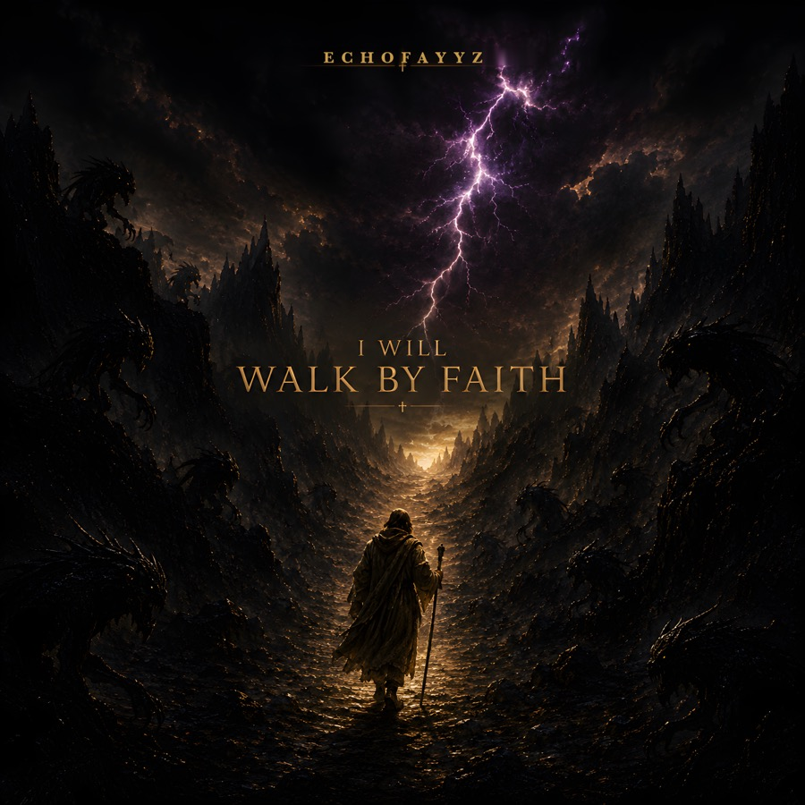
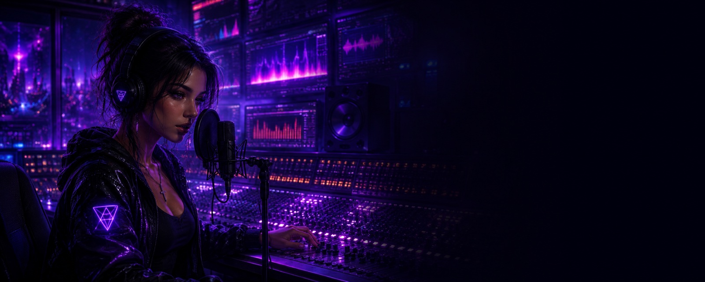

I Will Walk By Faith
“Though I walk through the valley of the shadow of death, I will fear no evil.” — Psalm 23:4. A man crosses the valley with things watching from both sides, and he does not turn back.

Euphoric 124 BPM dance-pop built around a female lead — dance-floor EDM and Christian dance anthems from the same studio, written, directed and produced by Marcel Gilbert, released through ZEROFAYYZ STUDIOS. Two singles out now, each with its own official lyric video; the dance singles are next.

Two singles out now — the Christian dance side of the catalogue — each with a full official lyric video and a short. The dance EDM singles follow. Streaming links go live as the stores finish processing each release.

“Though I walk through the valley of the shadow of death, I will fear no evil.” — Psalm 23:4. A man crosses the valley with things watching from both sides, and he does not turn back.
“At Your name, the darkness fades. At Your voice, the fear gives way.” He stands over the valley while the storm breaks, and then the light comes.
Both lyric videos in full.
New songs and videos land here first.

ECHOFAYYZ is the music. ZEROFAYYZ STUDIOS is the studio behind it — the channel that publishes the songs and the videos. The sound is euphoric dance-pop with a female lead. Most of the catalogue is dance EDM made for the floor; a few songs are Christian dance anthems, written for the part of the walk where it is still dark and you keep going anyway. One sound, two rooms.
AI tools are used to make this music and these videos, and that is disclosed everywhere it is published — on YouTube, and on every Reel and Short.
ECHOFAYYZ is not an AI persona. The lyrics are written and edited by hand, the videos are directed shot by shot, and every creative call is a person’s. The tools are tools. The artist is a person.